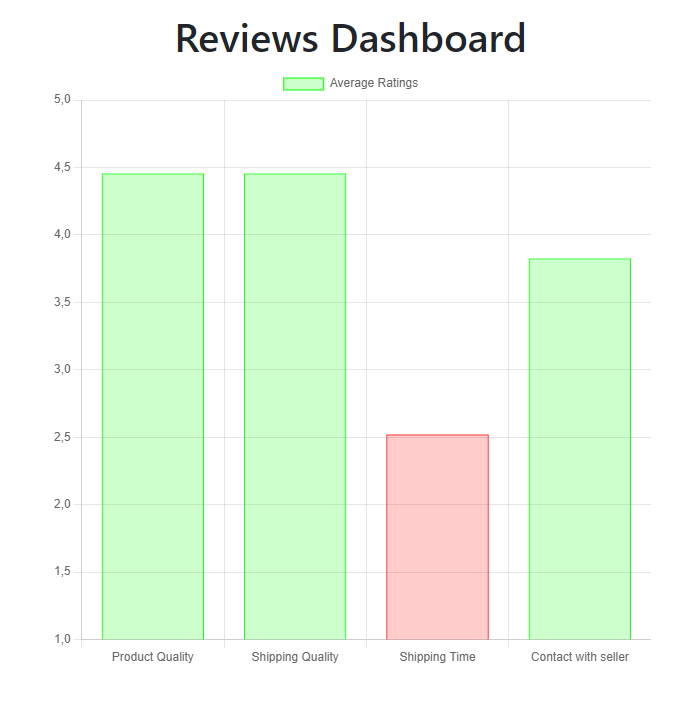

Saleboard
Solution for storing customers data in one place bulit with Flask, SQLAlchemy and Pandas.
-
Easy to read data
-
Interactive live charts
-
CSV file upload pipeline
-
Two-step verification
-
Clean user interface
-
Advanced searching options
Saleboard is made with foucus on user experience.
Technologies used:
- + HTML, CSS, JS, Bootstrap
- + Pandas
- + Flask (werkzeug.security, flask-mail, flask-login, flask-wtf, flask-sqlalchemy)
- + Sqlite database
- + Chart.js
CSV file upload pipeline
This application implements a robust pipeline for uploading, validating, processing, and storing CSV data. Here's a detailed description of the pipeline:
-
User selects a CSV file from their local system and uploads it through a form.
form id="upload-form" method="post" action="{{ url_for('upload_review_csv') }}" enctype="multipart/form-data" style="display: none;"> input type="file" name="file" id="file-input" accept=".csv" required> /form> -
Ensure that a file is included in the upload request.
if 'file' not in request.files: flash('No file part', 'danger') return redirect(url_for('sales')) -
Verify that a filename is provided.
if file.filename == '': flash('No selected file', 'danger') return redirect(url_for('review')) -
Ensure the file has a ".csv" extension.
if not file.filename.endswith('.csv'): -
Save the uploaded file to a dedicated dir on the server.
file.save(os.path.join('uploads', file.filename)) -
Use Pandas to read the CSV file into a Dataframe.
df = pd.read_csv(os.path.join('uploads', file.filename)) -
Making sure that data types, and data structure is correct.
# Validate dataframe -
After successful validation save it to the Sqlite3 database using SQLAlchemy.
df.to_sql('reviews', con=db.engine, if_exists='replace', index=False) flash('Data has been read correctly!', 'success') except Exception as e: flash(f'ERROR: {str(e)}', 'danger') os.remove(file_path) return redirect(url_for('review'))
Chart.js
Chart.js is used to create interactive and visually appealing charts for displaying data. Here's an overview of how Chart.js is integrated:
-
Query Data The average values of various review metrics (product quality, shipping quality, shipping time, contact quality) are calculated using SQLAlchemy queries.
# Example SQLAlchemy query to calculate averages averages = db.session.query( func.avg(Review.product_quality).label('avg_product_quality'), func.avg(Review.shipping_quality).label('avg_shipping_quality'), func.avg(Review.shipping_time).label('avg_shipping_time'), func.avg(Review.contact_quality).label('avg_contact_quality') ).all() -
Prepare Chart Data The queried data is organized into a dictionary with labels and data points.
# Example data preparation for Chart.js chart_data = { 'labels': ['Product Quality', 'Shipping Quality', 'Shipping Time', 'Contact Quality'], 'datasets': [{ 'label': 'Average Ratings', 'data': [avg['avg_product_quality'], avg['avg_shipping_quality'], avg['avg_shipping_time'], avg['avg_contact_quality']], 'backgroundColor': 'rgba(75, 192, 192, 0.2)', 'borderColor': 'rgba(75, 192, 192, 1)', 'borderWidth': 1 }] } -
Use Chart.js to create the chart. The chart_data passed from Flask is used to populate the chart.
# Example of Chart.js integration in HTML var ctx = document.getElementById('myChart').getContext('2d'); var myChart = new Chart(ctx, { type: 'bar', data: {{ chart_data|tojson }}, options: { scales: { y: { beginAtZero: true } } } });
Security and two-step verification
Review stars philosophy
After retrieving and sorting the reviews, each numeric rating is converted to a visual representation using stars.
Iterate through each review in the retrieved data
For each rating attribute (product_quality, shipping_time, shipping_quality, contact_quality), the numeric value is replaced with a corresponding number of star symbols (★).
Example
If review.product_quality is 4, it will be converted to ★ ★ ★ ★.